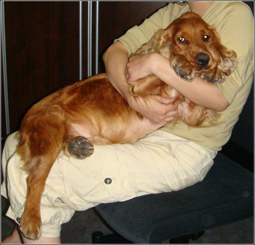
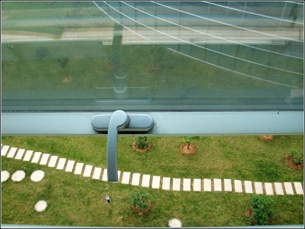
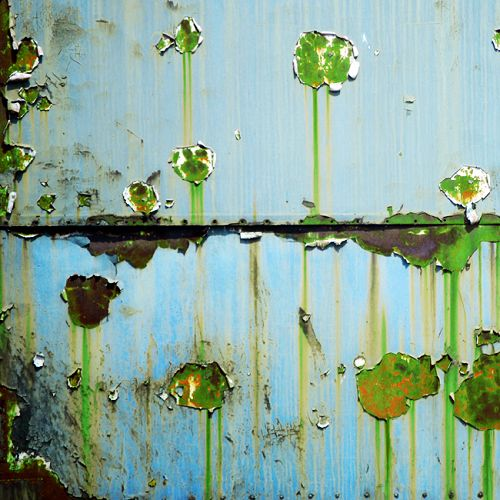

Ideas for life. @ Oct 21, 2008
我抱着的是一头小猪：D
抱着他可不容易哦，14.7KGS呢，最大的爱好就是吃和睡。



我抱着的是一头小猪：D
抱着他可不容易哦，14.7KGS呢，最大的爱好就是吃和睡。


胡适写了篇《差不多先生传》，差不多先生最终的悲惨命运绝非偶然。即使他没有丧命于牛医的手术刀下，将来也会死在他的“差不多”中。他的一生凡事追求差不多，殊不知事情往往是差之毫厘，失之千里的，两件差不多的事情常常会有截然不同的结果。所以可以说差不多先生一生都是失败的，而他败就败在这个“差不多”中，可人们……
他死后大家都称赞他样样事情看得透，对事事都不计较，是一个有德行的人，于是大家尊称死去的他为圆通大师，他的名誉越传越远，无数人都以他为榜样。于是人人都成了差不多先生——然而中国从此成了一个懒人国了。
原来差不多先生只是万千中国人的一个缩影而已，而胡适也只不过是用放大镜去写照中国人民的一言一行罢了。
如今MC HOTDOG做了首《差不多先生》的说唱。Hotdog在2008年回归音坛，全新专辑《差不多先生》中写实地批判社会写况，全碟以十首歌曲来贯串现实生活中的点滴，抒发了不可或缺却与琐碎至极的情景，但饶舌态度依然强硬，全民开讲毫不手软。
不需要一堆差不多的音乐 只需要差不多先生热狗
MCHotDog 强势回归，重返写实批判戏谑毫不手软！
热狗说：“30岁有30岁的骂人方式。”
2008狗嘴开讲，一张听得见也看得见的本格饶舌态度宣言。
差不多先生.MP3--MC HOTDOG
我抽着差不多的的烟 又过了差不多的一天
时间差不多的闲 我花着差不多的的钱
口味要差不多的咸 做人要差不多的贱
活在差不多的边缘 又是差不多的一年
一个差不多的台北市 有差不多的马子
差不多又干了几次 用着差不多的姿势
看着差不多的电视 吃着差不多的狗屎
写着差不多的字 又发着差不多的誓
差不多的夜生活 又喝着差不多的酒
听着差不多的音乐 喝醉差不多的糗
有着差不多的绝望 做着差不多的梦
裹着差不多的衣服 脑袋差不多的空
差不多的挂 说着差不多抱怨的话
时间也差不多了 该我那差不多的家
差不多的瞎 指鹿为马 都差不多吧
继续吧 继续瞎子摸象吧 有差吗
我是差不多先生 我的差不多是天生
代表我很天真 也代表我是个贱人
这差不多的人生 这个问题艰深
差不多先生 我的差不多是天生
代表我很天真 也代表我是个贱人
这差不多的人生 总在见缝插针
差不多的反复 总是差不多又一无反顾
差不多的感触 总是差不多又重产物
差不多的孤 差不多的毒
一条差不多的路 我吃着差不多的苦
我嗑着差不多的药 又睡了一场差不多的觉
差不多的烦恼 差不多要把我逼疯掉
差不多的糟 差不多的妙
差不多的闹 又差不多的屌
差不多的中国风 差不多要把耳朵蒙
改世不红 差不多要把你送了终
差不多的歌手 摆着差不多的乌龙
差不多的麦克风 唱差不多的胡隆 都在哭穷
差不多都像个猪头
偏偏我和他们是差不多的猪朋狗友
撒差不多的谎 唬烂差不多的强
骂人差不多的呛 不然你要怎么样！
我是差不多先生 我的差不多是天生
代表我很天真 也代表我是个贱人
这差不多的人生 这个问题艰深
差不多先生 我的差不多是天生
代表我很天真 也代表我是个贱人
这差不多的人生 总在见缝插针
差不多的你 差不多的我
差不多的他 差不多的TA妈
都差不多想发达 差不多打着哈哈
他骂着叉叉嘎嘎呼啦啦 都差不多的咔咔
差不多先生他像个笑话 有闻又在叫骂
差不多要跳不起来 还是要跳要吧
差不多要像乌龟 但乌龟乌龟翘吧
这差不多的人生 他妙吗
差不多要力争上游 想游到上流
差不多在心里默念阿门和佛陀布的放流
差不多的生活很街头 再 差一点你就变成街友
我唱了八十八个差不多 都差不多
差不多先生不会在乎这么多
日子应该怎么过 差不多的2008怎么霍
我是差不多先生 热狗
我是差不多先生 ... ...
我是差不多先生 我的差不多是天生
代表我很天真 也代表我是个贱人
这差不多的人生 这个问题艰深
差不多先生 我的差不多是天生
代表我很天真 也代表我是个贱人
这差不多的人生 总在见缝插针
我是差不多先生

有次出差，一位50多岁的老同事随身携带了这瓶百雀羚，当时没有带手霜，洗完手借了她的百雀羚用，感觉不比国外品牌差。我爸爸大几十年一直是百雀羚忠实用户，我曾给他买过妮维雅冬天用的护肤品，他用了也觉得不错。但最后还是用回百雀羚。认识百雀羚也是从父亲那里开始的，以前是那种扁扁的铁盒子包装，深蓝底色上面有几只小鸟，铁盒打开上面有一层银色锡纸，小心撕开一部分，用完这部分内容再撕另外的部分...里面呈白色膏状，依稀记得很油，因为难吸收，所以容易沾上灰尘和脏东西，但却香味扑鼻。用完的百雀羚盒子会用来装自己的小零钱，家里针线什么的。不经意的再次邂逅，勾起小时侯的很多回忆，上个周末特地到超市里买里两瓶作护手霜用。
如果没记错牌子的话，青春期我常用的是肤美灵洗面奶和3元一瓶的郁美净奶液，白底粉红字体的塑料瓶身，洗完脸涂上奶液，噼里啪啦的用两只手拍打，那之后的脸蛋最美，血液循环，奶液吸收的也好。所以那时侯最喜欢自己刚洗过脸涂完奶液的样子。
80年代后期，学校里开始流行耐克鞋，当时唯一一个款式是皮质白底系带休闲运动鞋，侧面一个大大的红色耐克标志：勾。好象30多元一双吧？接着开始流行防水风衣，穿在身上嚓嚓的响，里面涂了金黄或银白的防水层，据说是进口的涂层，帽子折叠在拉链领子里，肩胛骨那儿有一道透气的纱网。有酒红色、银色、藏青色，我当时有件酒红色的。
我用的第一款香水是桂花香水，忘记牌子了，要扯到过去用的老牌子，还有很多，有人推荐一些国货，绝对精品，量大、安全、好用、便宜到飙泪：
适合干性皮肤的----
洗面奶：大宝美容洗面奶、郁美净鲜奶润白洁面乳、肤美灵（黄色瓶子）
爽肤水：大宝爽肤水、郁美净的爽肤水、千纤草丝瓜水（500ml大概25元左右）、昭贵芦荟凝胶汁、迪赫尔芦荟凝胶汁、相宜本草四倍蚕丝柔肤水
乳液：大宝SOD蜜、宫灯杏仁蜜、芭蕾珍珠蜜、郁美净鲜奶乳液、美加净银耳珍珠滋养蜜
霜：漳州皇后牌片仔癀珍珠膏、芭蕾珍珠膏、相宜本草四倍蚕丝蛋白精华霜、美加净银耳珍珠滋养霜、隆力奇蛇油膏
防晒霜：大宝物理防晒霜SPF20
适合油性皮肤的----
洗面奶：片仔癀洁面乳、肤美灵（绿色瓶子）、郁美净鲜奶润白洁面乳（清凉型）
爽肤水：片仔癀平衡爽肤水、千纤草丝瓜水（500ml大概25元左右）、昭贵芦荟凝胶汁、迪赫尔芦荟凝胶汁
乳液：大宝SOD蜜、宫灯杏仁蜜、芭蕾珍珠蜜、片仔癀保湿滋润蜜
霜：片仔癀珍珠膏、芭蕾珍珠膏
防晒霜：大宝物理防晒蜜SPF18
面膜：相宜本草补水醒肤面膜、相宜本草润白滋养面膜、西藏红花睡眠面膜
卸妆：百雀灵凤凰甘油一号——即可以用来的当卸妆油、也可以用来当爽肤水、也可以用来当乳液、还可以用来当面膜，因为是透明啫喱状，可谓是万能甘油，一点也不油，是芦荟胶那种状态，我都是用它来卸妆或是当爽肤水的。

百雀羚(始于1940)年
上海家化的老牌子，早在1930年，公司前身——富贝康化妆品有限公司成立。1940年富贝康公司隆重推出国内首创 的香脂类产品--“百雀羚”香脂(Peh-ChaoLin CREAM)。1978年，随着“凤凰”品牌的诞生，结合世界先进的科技与中国的传统医学，先后开发出风靡市场的凤凰珍珠、凤凰高级胎盘和凤凰活性胎盘等营养系列化妆品。彻底改变了肌肤由单纯的“保护”功能进入全面“护理、滋养”的生活理念，实现了化妆“营养肌肤”的全新革命。公司先后获得了“上海著名商标”及“上海名牌产品”等多项称号。
消费者热赞产品：百雀羚冷霜护肤脂（香脂）"滋润型（轻轻一推就化成液态了，吸收快，不粘腻。过了半小时再照镜子，脸上不仅没有油光，用手摸起来还好光滑）。
百雀龄凡士林润肤霜:号称国产小黄油，能与倩碧黄油媲美。
凤凰甘油一号：经典的国货精品，任何肤质适用，纯正、温和、无刺激绝对不含色素和香料。可全身使用，全面滋润，无需加水，直接涂抹。是论坛JMS大赞的实惠质优的保湿滋润圣品！
转自同事丫丫的MSN SPACES，真的很爆笑。
在晓庄附近上班朋友的空间里记载的真人真事：
今天在公交车上，由于拥挤一男一女发生了碰撞。
时髦女郎回头飞眼道：“你有病啊？”
男子觉得莫名其妙回道：“你有药吗？”
车上人窃笑！
女子觉得生气回道：“你有精神病啊？”
男子冷面对道：“你能治啊？”
全车人爆笑！
公交司机停车，趴在方向盘上大笑！
*************************************
这是珠江路上上班的朋友遇见的
公交车上超挤，有一女人站在门口，从车后面挤过来一个ＧＧ要下车，跟那女的说了一句“让一下，下车”，那个女滴木有动。
ＧＧ挤过去时就踩到她了。结果那女人好厉害的，不停的骂“神经病啊你！神经病啊你！~~”，还超大声，搞得全车都看呀。
ＧＧ一直木有说话，下车时忍不了了，回头对那女人说，“复读机呀你！”
全车人暴笑~！
后边有几个搞笑的小孩，不停的伴演刚才的一幕，甲说“你神经病呀你！。。。。。乙说“你复读机呀你”。。。。。。全车人暴笑~！
后来，有个小ＭＭ也要下车，挤过去怯怯滴说“偶~偶~偶想下去，偶不是神经病~！”
全车人再次暴笑~！
那个女人木有说话，可是从边上飘来一句话“你是不是没电了”
全车人暴笑不止~！

刚看完《Atonement》，内心充满了无尽的忧伤，印象深刻的英式口音，20世纪40年代的氛围色彩，男女主角思考着的双眸，又一个悲伤的爱情故事。虽然他们在相爱的时候各自面临死亡，但故事结尾却在Briony的书中给于人们一个相爱到永远的结局......在彼此相爱着还能真实的触摸着对方是多么幸运的事儿。
看多了美片里“波涛汹涌”的女性形象，女主角Keira Knightley的平胸倒给人以智慧、高贵的视觉。这个23岁女演员的男友Rupert Friend与《指环王》和《加勒比海盗》中的Orlando Bloom长相十分相似。
*最主要说的是男主角James McAvoy，他有双多情的蓝眼睛，《Atonement》的导演Joe Wright酷爱史诗片，他正是因为原著小说而选定了James McAvoy。“当我读到‘他有一双乐观主义的眼睛’这句话时立刻想到了James，他确实有着闪烁的、盛满希望的眼睛，总能看到光明。”Wright说。
*James McAvoy表示自己对《Atonement》情有独钟，他说：“作为演员总是有持续的不确定性，你对你做过的工作，都不确定，有的时候真不知道--这究竟是不是一部烂片？而对《Atonement》，我的体验完全相反，实际上我觉得那是段最美的时光。”
他看上去并不是那种典型的英俊型，但后来每个女人都会迷上他。他看上去有种天使般的无邪，同时又具有男子气概，而且他看起来很真实，又很有性格，非常吸引人。
James McAvoy 2000年从英国皇家音乐与戏剧学院毕业后，一直从事舞台和影视表演，象所有初出茅庐的小演员一样跑着龙套，演着小配角，直到BBC 2004年的热播剧《Shameless》（无耻之徒）让他在英国成名，还因此收获了爱情，2006年迎娶了比他大9岁的英国演员Anne-Marie Duff。
*以下为他参演的片子：
《Wanted 》，《Becoming Jane》， 《Penelope 》，《The Last King of Scotland 》，《Starter for Ten 》，《Shameless 》，《Inside I'm Dancing 》，《The Last Station》，《macbeth》，《Shakespeare Retold 》，《Strings 》，《Bright Young Things 》，《Perrier's Bounty 》，《Ben-Hur: A Tale of the Christ 》...

29岁的James McAvoy和大他9岁的妻子Anne-Marie Duff。

小区有户人家的门口摆着黑色油亮的大陶罐、长长的竹枝、竹藤编织的门帘、小石狮子和各种迷你花草。每每从那家门口路过，都要多看上几眼多享受一番东南亚风情。
曾看过一本杂志上介绍，一个在巴黎的中国女孩的浪漫追求，她懒得在工作间耗费心力，却为自己的五尺花园费尽心思。租赁昂贵地段，却拥有了日日相望的花园，盆栽上描画着自己的心情，更是减压妙法。
和中国花卉市场不同，巴黎人更喜欢买来花草的种子，种植在自家花园。所以在巴黎，不论是几家合用的大花园或是私人的小花园，几乎处处花香四溢，再小的阳台都是开满丁香。“Jardinier”和厨师一样，是受人尊重的职业，甚至被认为是艺术家。我们常可以从国外的电影中看到某某人离职时，怀里除了捧着一个纸箱外可能还会有一小盆植物。
想拥有漂亮的花园，浇水其实很有讲究，应掌握不干不浇的原则，浇水量要少一些。面积有限的小庭院里种植花草并不容易，以前我养什么植物死什么植物，究其原因就象母亲给孩子很多很多的爱一样，我以为多浇水肥花草能长的更好，结果它们都相继死亡。小庭院地方小，光照少。克服这些不利条件的办法应改为盆栽。我们种花草不是为别人，其实是为自己。每一次照顾都会让自己的心成熟一些，你越耐心，花朵就会变化一次。虽然这些花草并不名贵，但带来的满足感却丝毫不逊色，把时间花在这些有生命的美好事物上，是幸福的。
瞧！我养的花怒放的盛开喽~


据说国外的人动手能力比国内人强？曾听说有人在澳大利亚买了土地自己盖房子，有点不可思议。国内就不同了，农村自己盖个楼房可以，城市要自己盖房子估计挺难的。
昨天下班后到宜家买了张电脑椅和一个鞋架，宜家安装费用为商品金额的2.5%，不足20元按20元计算，算下来那张电脑椅安装费在20元钱。因为要预约安装时间就放弃了。晚饭后拆开包装箱自己安装，里面除了配件还有安装工具，大约用了40多分钟安装好两个东西，小有成就感。买宜家产品可以培养动手能力哦！忙完这一切，只有一个半小时供我消磨了~
在身体上，从来没有感觉到象这段时间这么累过。
上班总有这样那样的事牵挂着，远非工作本身需要动脑子。
下班了却忙得四脚朝天，没完没了的家务。
昨天的salsa课来了许多学员，练习时，老生新生将整个房间站满了。上堂课和这堂课男生少，女生多。基本会抢舞伴吧？但秩序井然，想来女生都想挑一个高手搭配练习，才不枉上课的真正目的。在没完没了的家务事下，我感到自己的体力越发下降，手上的皮肤也沧桑了。
昨晚睡觉前，看了会杂志，那本杂志上有大段大段的文字，阅读能安慰我的心灵，但很快就睡意朦胧。晚上醒了好几次，luke在我的床边鼾声大起，睡得那个香。早晨起来扭头看到luke醒了趴在床边等我起床。忽然觉得自己过得不如一条狗，luke除了吃喝拉撒睡就是玩球，什么都是人给它伺候好了。人呢？什么都得自己操心，妈呀，别人都是怎么过家家的？难道生活，原本是没有情调的？！
今天晚上决定什么都不干，就是消磨时间，看电影吃零食....

喧哗热闹的人，总害怕被周遭忽视，害怕远离人群、被遗忘在角落。
极尽所能的喧哗只为抵抗心中的恐惧与不安。
不由自主会回避喧哗热闹的人，有种虚无感。当人群散去，喧哗热闹变成孤独与焦虑相伴。相反，渐渐欣赏那些沉稳的表情，会说话的眼神。